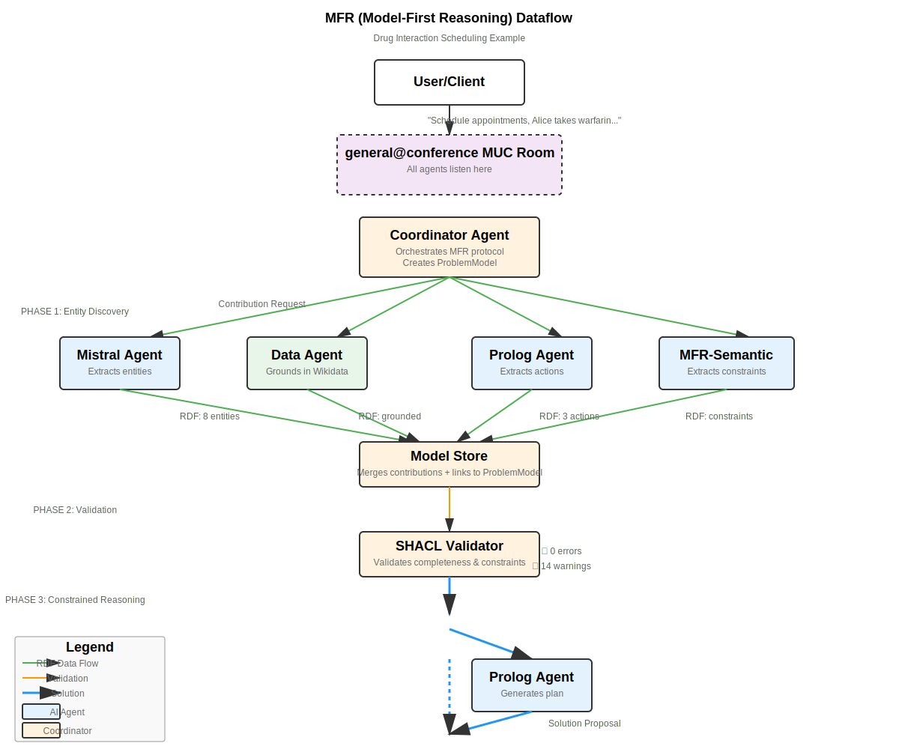

TIA Intelligence Agency: Building a Multi-Agent System for Collaborative Problem Solving
- TIA Live Chat - register and join the
general@conference.tensegrity.itchatroom to play - GitHub Repo
- Documentation - in progress, needs organising
Status Report : December 24, 2025
Introduction: Why This Stack?
The foundation of TIA (The Intelligence Agency) rests on three key technology choices, each selected for specific philosophical and practical reasons:
Why chat agents? Text is the universal lingua franca of humans online. From command lines to messaging apps, text-based interaction remains the most accessible and flexible interface for human-computer communication. Chat agents meet users where they already are, speaking a language everyone understands.
Why RDF? The web isn't just a collection of documents—it's a global graph knowledge base. RDF (Resource Description Framework) provides the semantic infrastructure to represent, link, and reason about knowledge in a way that machines can process while humans can audit. It's the native language of the Semantic Web.
Why XMPP? In an era of platform lock-in and proprietary APIs, XMPP (Extensible Messaging and Presence Protocol) stands as an open specification not owned by big tech. It provides federation, extensibility, and proven reliability for real-time messaging—essential features for a multi-agent system that needs to coordinate across organizational boundaries.
The Challenge: Scheduling with Constraints
The sample problem demonstrates TIA's approach to constraint-based reasoning: "Schedule appointments for patients. Alice takes warfarin, Bob takes aspirin. Ensure no drug interactions."
This seemingly simple task requires:
- Entity recognition (Alice, Bob, warfarin, aspirin)
- Knowledge grounding (what are these drugs?)
- Constraint identification (which drugs interact?)
- Action planning (how to schedule safely?)
- Solution validation (does this actually work?)
No single agent can handle all these aspects. TIA orchestrates multiple specialized agents to collaboratively solve the problem.
The Architecture: Four Phases of Problem Solving
Dataflow Overview
The complete workflow involves four distinct phases, each with specialized responsibilities:

See the full Architecture Overview for technical details.
Phase 1: Entity Discovery
When a user poses a problem, multiple agents contribute their expertise:
- Mistral Agent: Uses LLM capabilities to extract entities from natural language ("Alice", "Bob", "warfarin", "aspirin")
- Data Agent: Grounds these entities in external knowledge bases (Wikidata), discovering that warfarin and aspirin are anticoagulants
- Prolog Agent: Identifies potential actions (schedule_appointment, check_interactions)
- MFR-Semantic Agent: Extracts semantic constraints from the problem domain
Each agent contributes RDF triples describing what it discovered. These contributions flow through XMPP Multi-User Chat (MUC) rooms, primarily using the general@conference room, though the system also supports specialized rooms (mfr-construct, mfr-validate, mfr-reason) for different phases.
Phase 2: Validation
The Coordinator Agent merges all contributions into a unified Problem Model—an RDF graph containing:
- Entities (
mfr:Entity) - Actions (
mfr:Action) - Constraints (
mfr:Constraint) - Goals (
mfr:Goal)
This model is then validated using SHACL (Shapes Constraint Language). SHACL shapes define what a valid problem model must contain:
# Example: Every ProblemModel must have at least one entity
mfr:ProblemModelShape a sh:NodeShape ;
sh:targetClass mfr:ProblemModel ;
sh:property [
sh:path mfr:hasEntity ;
sh:minCount 1 ;
sh:message "Problem model must define at least one entity"
] .
If validation reveals errors or conflicts (e.g., two agents provide contradictory information), the coordinator initiates a conflict negotiation phase. If only warnings appear, the system proceeds.
Phase 3: Constrained Reasoning
With a validated model in hand, the coordinator broadcasts a Solution Request. Agents now reason within the constraints of the explicit model:
- The Prolog Agent generates a logical plan using tau-prolog, respecting the identified constraints
- Other agents can propose alternative solutions
- Each solution references specific entities and constraints from the shared model
The key innovation: agents aren't improvising or hallucinating solutions. They're working from an explicit, validated representation of the problem space.
Phase 4: Execution & Binding (In Progress)
The Executor Agent represents the next phase of development:
- Receives high-level solution plans
- Translates them into concrete Prolog queries
- Requests specific variable bindings from the Prolog agent
- Returns executable results to the coordinator
This phase transforms abstract plans ("schedule_appointment") into concrete actions ("schedule Alice at 10:00 AM, Bob at 2:00 PM").
Communication Protocols
Lingue: Language Mode Negotiation
Different agents speak different languages. The Lingue protocol (see Lingue Ontology) enables agents to negotiate which communication modes they'll use:
lng:ModelFirstRDF- RDF-based problem modelslng:SparqlQuery- Knowledge retrieval querieslng:PrologProgram- Logical rules and programslng:HumanChat- Natural language interactionlng:ModelNegotiation- Collaborative model construction
Each agent publishes its capabilities in an RDF profile. When agents need to collaborate, they negotiate to find compatible modes.
Message Formats
TIA uses a hybrid messaging approach:
JSON Messages: Used for lightweight protocol coordination
{
"type": "mfr:SolutionRequest",
"sessionId": "abc-123",
"timestamp": "2025-12-24T10:00:00Z"
}
RDF Messages: Used for semantic content
@prefix mfr: <http://purl.org/stuff/mfr/> .
<#entity-alice> a mfr:Entity ;
schema:name "Alice" ;
mfr:entityType "Patient" ;
mfr:relatedTo <#medication-warfarin> .
Most XMPP stanzas carry minimal human-readable text with RDF payloads attached. Only critical notifications appear as readable text in the chat room, keeping communication efficient while maintaining transparency.
The Vocabulary Stack
TIA's semantic capabilities rest on a layered vocabulary architecture (see vocabs/ directory):
Foundation Vocabularies
lingue.ttl(8.3 KB): Core Lingue protocol vocabulary defining agents, profiles, and communication modeslingue-shapes.ttl(5.2 KB): SHACL shapes validating Lingue profile structureibis.ttl(15.3 KB): Issue-Based Information System vocabulary for structured argumentationmcp-ontology.ttl(4.3 KB): Model Context Protocol integration vocabulary
MFR Vocabularies
mfr-ontology.ttl(14.0 KB): Problem model ontology (entities, actions, constraints, goals)mfr-shapes.ttl(12.9 KB): SHACL shapes enforcing problem model validity
These vocabularies work together: Lingue handles agent communication, IBIS structures debates and decisions, MCP bridges to external tools, and MFR defines problem models.
A Complete MFR Session Walkthrough
Let's trace the drug interaction problem through the system:
1. User Input
mfr-start Schedule appointments for patients. Alice takes warfarin, Bob takes aspirin. Ensure no drug interactions.
2. Coordinator Initiates Session
- Creates session ID:
abc-123 - Broadcasts
mfr:ModelContributionRequest - Sets 30-second timeout for contributions
3. Agent Contributions
Mistral extracts entities (2.7 KB of RDF):
<#entity-alice> a mfr:Entity ;
schema:name "Alice" ;
mfr:entityType "Patient" .
<#entity-warfarin> a mfr:Entity ;
schema:name "warfarin" ;
mfr:entityType "Medication" .
Data grounds in Wikidata:
<#entity-warfarin>
owl:sameAs <http://www.wikidata.org/entity/Q18216> ;
mfr:wikidataLabel "warfarin" ;
mfr:wikidataDescription "anticoagulant medication" .
MFR-Semantic identifies constraints:
<#constraint-1> a mfr:Constraint ;
schema:name "Drug interaction constraint" ;
mfr:constraintType "DrugInteraction" ;
mfr:appliesTo "warfarin", "aspirin" .
Prolog defines actions:
<#action-schedule> a mfr:Action ;
mfr:actionName "schedule_appointment" ;
mfr:hasParameter "patient", "time" .
4. Model Validation
The coordinator merges 11 entities, 4 actions, 1 constraint, 2 goals:
[CoordinatorProvider] Linked components: 11 entities, 2 goals, 4 actions, 1 constraints
Model validation passed (10 warning(s), 11 info)
Proceeding to reasoning phase...
5. Solution Generation
Prolog agent generates:
<#solution-1> a mfr:SolutionProposal ;
schema:name "Drug-safe scheduling plan" ;
mfr:hasPlan (
"schedule_appointment"
"check_drug_interactions"
"avoid_interaction"
) .
6. Human-Readable Output
=== SOLUTION ===
Solution from Prolog:
Generated plan with 3 actions
Plan steps:
1. schedule_appointment
2. check_drug_interactions
3. avoid_interaction
What Makes This Different?
Traditional multi-agent systems often suffer from:
- Implicit assumptions: Agents make unstated assumptions leading to misunderstandings
- Opaque reasoning: Solutions appear without explanation
- Fragile coordination: Ad-hoc protocols that break under edge cases
TIA's Model-First Reasoning approach addresses these:
- Explicit models: All assumptions encoded in validated RDF
- Traceable reasoning: Every step references the shared model
- Robust protocols: Lingue negotiation ensures compatible communication
- Semantic validation: SHACL catches structural errors before reasoning begins
Current Status and Next Steps
Working:
- ✅ Multi-agent entity discovery
- ✅ RDF model construction and merging
- ✅ SHACL validation with conflict detection
- ✅ Prolog-based plan generation
- ✅ Human-readable solution formatting
In Progress:
- 🚧 Executor agent for plan execution
- 🚧 Multi-room architecture (specialized MUC rooms per phase)
- 🚧 Enhanced conflict negotiation
Planned:
- 📋 Solution ranking and synthesis
- 📋 Interactive model refinement
- 📋 Learning from previous problem models
Try It Yourself
Start the system:
./start-all.sh
Connect via REPL:
NODE_TLS_REJECT_UNAUTHORIZED=0 node src/client/repl.js admin admin123
Pose a problem:
mfr-start Plan a dinner party for 6 people. Include one vegetarian, two with gluten allergies, and ensure balanced nutrition.
Watch as multiple agents collaborate to build a model, validate constraints, and generate a solution—all using open protocols and semantic technologies.
TIA represents an experiment in building trustworthy AI systems through explicit knowledge representation, validated reasoning, and transparent multi-agent coordination. The code is open source and the protocols are based on open standards. Contributions welcome.
Links: